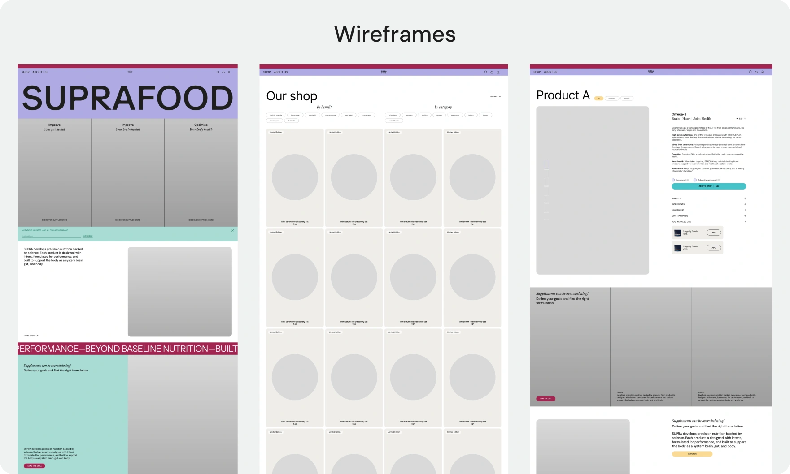
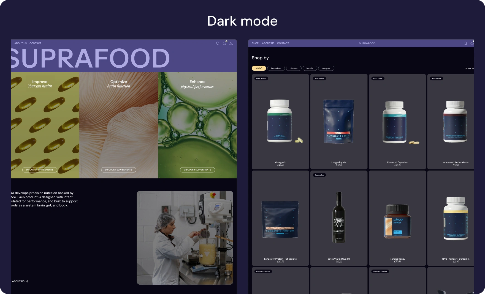
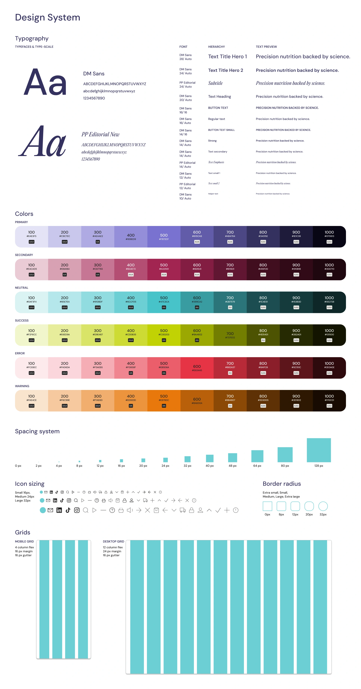
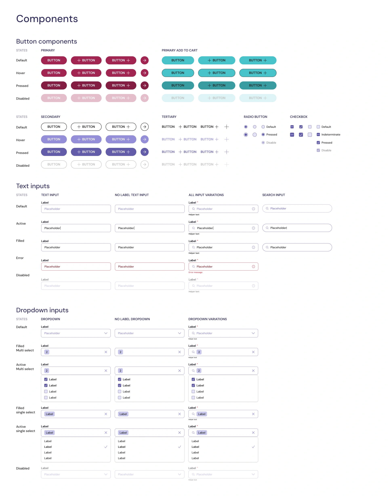
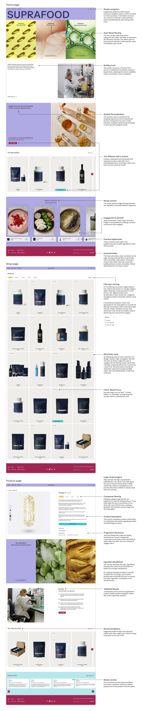

Suprafood — Building a design system from scratch
Design system • Academic project • Figma • Individual project • 2026

Context
Suprafood is a concept e-commerce store for science-backed supplements, positioned against a market driven by trends and vague claims, it prioritizes transparency and research as core value. This academic project uses that premise to explore how to build a design system in Figma from scratch and use it to create a coherent, scalable product.
The problem
A Market built on noise
The starting point wasn’t a formal brief, but an observation: months of seeing supplement ads on Instagram, opinions, trends, and “miracle” claims. Despite the market’s size (over $86B in Europe), much of it relies on influencer credibility, vague claims, and aesthetics that sell before informing.
That tension became the brief. I didn't want to design for supplement enthusiasts or healthcare professionals, both already know how to navigate this space. I wanted to design for the person in the middle: someone curious about their health, overwhelmed by the options, and skeptical of brands that can't explain themselves.
Objective
Prove design system thinking, not just visual craft
This project focused creating a brand that communicates trust and clarity. The aim was to present science-backed information in a way that is transparent, easy to understand, and visually compelling. Using a design system that is structured, consistent and adaptable.


Process
From structure to system
The process started analog, sketching and low-fidelity wireframing to define the information architecture and purchase flow before committing to any visual decisions. This early stage was deliberately rough: the goal was to solve structure, not aesthetics. AI was used here as a thinking tool to pressure-test layout directions and explore structural alternatives quickly, not to generate design output.
01 Sketching
Analog exploration of structure and flow.
02 Wireframes
Low-fidelity information architecture definition.
03 Design system
Define a visual identity
04 UI design
High-fidelity screens built from system components.
05 Prototype
Interactive flows with full theming support.
Technical depth
An evolving design system
The system was developed alongside early exploration, with typography, color tokens, spacing, and component variants defined upfront to guide decisions.
Foundations — Type scale and styles, color tokens, spacing system, Figma variables
Components — Buttons, inputs, tags, navigation, product cards, cart and checkout
Theming — Light and dark mode, variable-driven, consistent across screens
Prototype — Interactive flows, full purchase journey, component states and variants
Building the system before the screens introduces an early constraint: structure is defined ahead of visuals, supporting consistency and scalability. At the same time, the system evolved with the brand—components were refined, extended, and adjusted as the product took shape.


Outcome
A fully prototyped, theme-ready e-commerce experience
The final deliverable is a complete desktop prototype — a science-backed supplement store with a coherent visual identity, a structured component library, and full light and dark mode support. Every screen is built from system components, which means any change to the system propagates consistently across the entire product. In a real product context, that's the difference between a design that scales and one that breaks the moment a second designer touches it.
- Full design system in Figma
- Light & dark mode
- Interactive prototype
- E-commerce purchase flow
